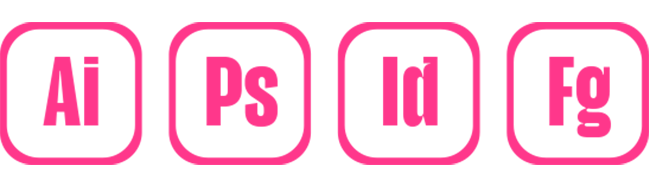
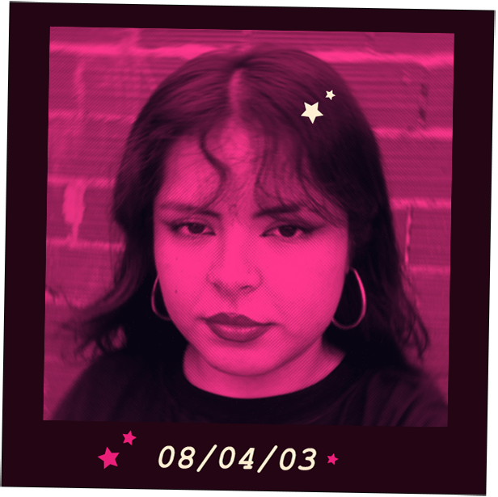

¡Hola, soy Yaz!
Soy estudiante de Diseño Gráfico, con interés en la comunicación visual, el branding y la creación de piezas que conecten con las personas. Me gusta explorar ideas, experimentar con estilos y buscar siempre una forma clara y atractiva de comunicar. A lo largo de mi formación trabajé en distintos proyectos académicos donde desarrollé habilidades en composición, tipografía y herramientas de diseño digital como Illustrator, Photoshop e InDesign. Disfruto tanto la parte creativa como el proceso de llevar una idea desde lo conceptual hasta lo visual. Me considero una persona curiosa, detallista y con ganas de seguir aprendiendo constantemente. Busco seguir creciendo profesionalmente, sumando experiencia y nuevos desafíos dentro del mundo del diseño.
Habilidades
Durante mi formación aprendí a utilizar herramientas como Figma, Illustrator, Photoshop e InDesign, que aplico en distintos proyectos de diseño. Estas me permiten trabajar tanto en piezas digitales como editoriales, combinando creatividad y técnica para comunicar de forma clara y atractiva.

